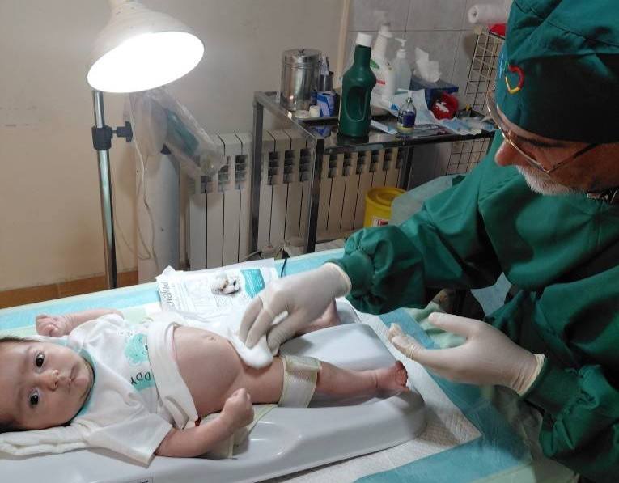
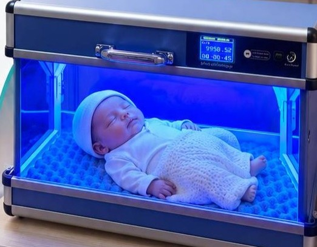
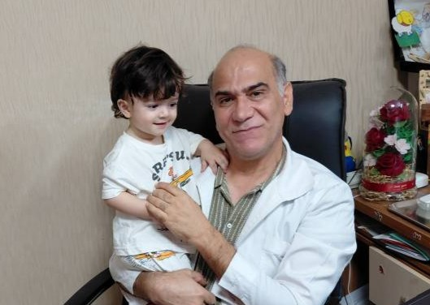
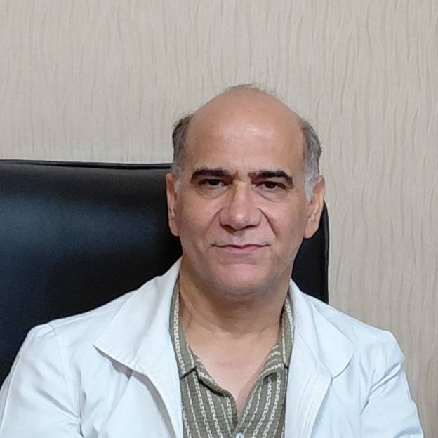

ختنه به روش حلقه نوین
بدون درد و با امکان دریافت مشاوره با پزشک در مطب انجام میگیرد.
مراقبت تخصصی، مشاوره تغذیه و درمان زردی نوزاد؛ همه در یک مجموعه، با امکان ویزیت آنلاین و حضوری.
مشاهده خدمات
بدون درد و با امکان دریافت مشاوره با پزشک در مطب انجام میگیرد.

تشخیص زردی با دستگاه بدون خونگیری در مطب و درمان زردی با اجاره دستگاه فوتوتراپی و در منزل امکان پذیر است.

امکان ویزیت آنلاین با توجه به شرایط شما و راحتی والدین، امکان پذیر است

دکتر عباسی علاوه بر مدیریت کلینیک، ویزیت آنلاین و حضوری هم انجام میدهند. میتوانید برای برنامه غذایی و مشاوره تخصصی به مطب مراجعه کنید.